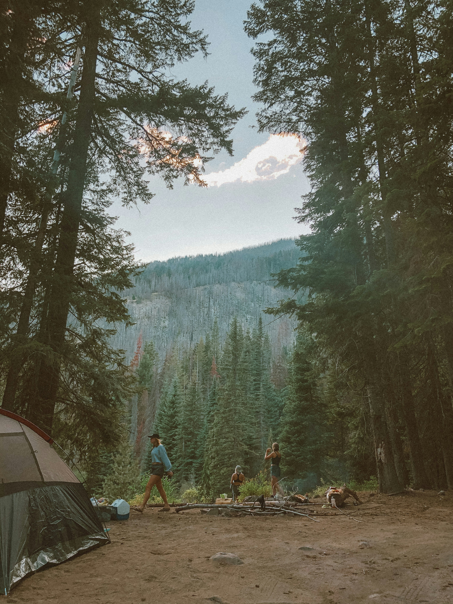
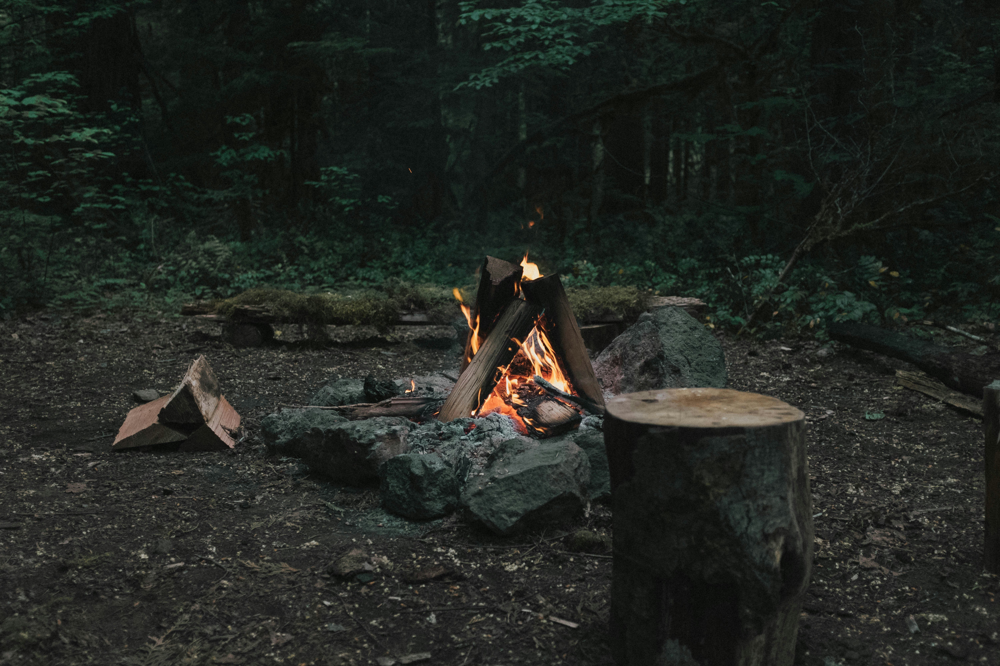
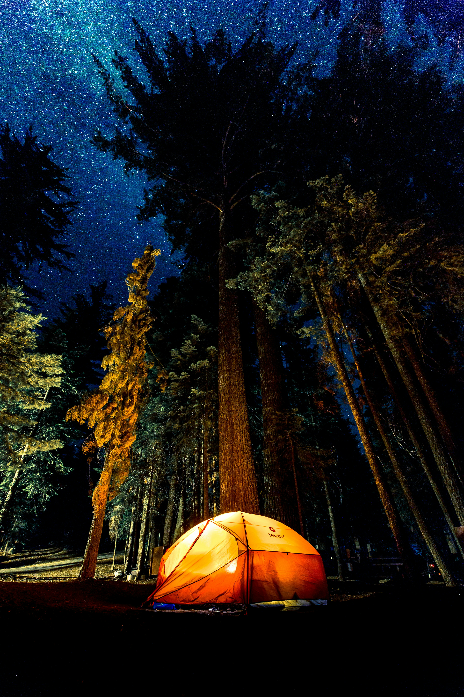

This isn't a hike to a summit — it's a night spent properly in the forest. In the late afternoon we walk into Nordmarka, the wilderness that begins at the edge of Oslo's suburbs, to a quiet spot your guide knows well and most visitors never find.
Tents go up, a fire is lit, and dinner is cooked right there as the light turns gold over the trees. There's no schedule to keep — just the fire, the forest, and the slow business of watching the sun go down. You sleep in a tent under the stars, and wake to coffee and a forest sunrise before the short hike back out and the drive home.
Everything is carried in and set up by your guide — tents, sleeping bags, cooking equipment, food. You bring yourself and a sense of curiosity.



Your private guide, hotel pickup and drop-off, all camping equipment (tents, sleeping bags and mats), a fire-cooked dinner, breakfast the next morning, and the hike in and out of the forest. There is nothing you need to bring or organise yourself.
No. The hike in is gentle, around an hour through forest terrain, and your guide sets up the camp, lights the fire and cooks the meal. This is suitable for anyone reasonably comfortable walking for an hour with a light pack.
Your guide monitors the forecast in the days before your trip. Light rain doesn't stop the experience — the campsite and fire are set up to handle it. In genuinely unsuitable conditions, we'll contact you to reschedule.
We use a small number of secluded spots in Nordmarka, the forest wilderness on Oslo's doorstep, chosen for views, shelter and privacy. The exact site depends on conditions on the day and is part of what your guide brings to the experience.
It can be, depending on the age and experience of your children. Get in touch and we'll help you decide whether it's the right fit for your group.
Yes — let us know any dietary requirements or allergies when you book and your guide will plan the menu around them.